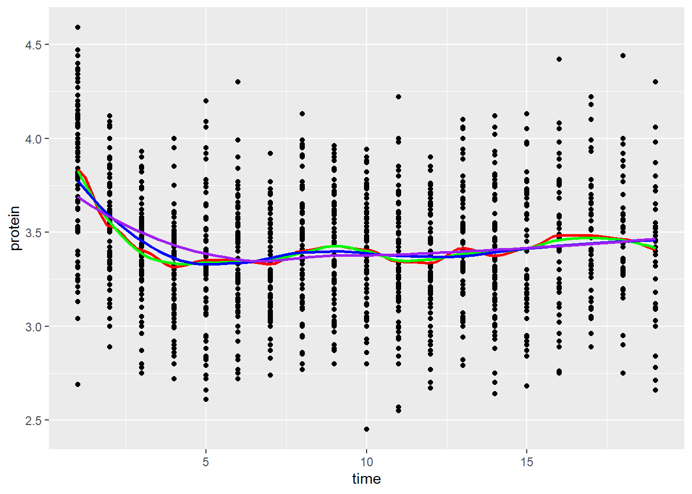

LDA - EDA
Exploratory Data Analysis
template
Kwangmin Kim
April 23, 2023
- 시간에 따라 변화하는 반응 변수의 평균 패턴 인식
- 시간에 따라 변화하는 개인별 패턴 인식
- 그룹간의 반응 변수와의 관계 인식
- 이상점 또는 특이치를 판독
- Define the weighted design matrix, \(\mathbf{W}\), as a diagonal matrix of weights, where each diagonal element corresponds to the weight for the corresponding observation.
- Define the weighted response vector, \(\mathbf{y}_{w}\), as a vector of the response values multiplied by the square root of the corresponding weight.
- Define the weighted parameter estimates, \(\hat{\beta}_{w}\), as the solution to the weighted least squares problem: \[ \hat{\beta}_w = \operatorname*{arg\,min}_{\beta} (y_w - X\beta)^T W (y_w - X\beta) \] where \(\mathbf{X}\) is the design matrix of predictor variables.
- The estimated model can be obtained by substituting the weighted parameter estimates, \(\hat{\beta}_{w}\), into the regression equation:
In EDA of longitudinal data, mean function, covariance structure, and variogram are estimated and visualized to capture the characteristics of the data and to support the statistical inference results.
0.1 Mean Function Estimation Using Smoothing Methods
To show a trend of a response variable, smoothing methods are used to estimate the trend or mean funtion.
0.1.1 Recognition of Average Patterns in Response Variables Changing over Time
0.1.1.1 Spaghetti Plot
Spaghetti Plot: individual trends of a response variable
0.1.1.2 Spaghetti Plot with Smoothing
Spaghetti plots with mean functions are used to make them more informative.
\[ Y(t)=\mu(t)+\epsilon \]
0.1.1.2.1 Kernel Estimation
Kernel estimation is a nonparametric method used to estimate the underlying probability density function of a random variable. In kernel estimation, the density estimate is calculated at each point by placing a kernel function around that point, and the values of all kernel functions are added up to estimate the density.
In the case of estimating the conditional mean function \(\mu(t)=\operatorname{E}(Y|T=t)\), we can use kernel estimation with a smoothing kernel function to estimate the mean at each point \(t\). The kernel function is used to assign weights to the data points near each point \(t\) based on their distance from \(t\), and the weighted average of the \(Y\) values for these nearby data points gives the estimated value of \(\mu(t)\).
t시점을 중심으로 window에 포함된 반응변수 값에 대해 적절한 가중치를 적용하여 mean function을 추정.
\[ \mu(t)=\operatorname{E}(Y|T=t)=\int y f(y|t)dy=\int y \frac{f(t.y)}{f_{T}(t)}dy \]
\[ \begin{aligned} \hat{\mu}(t) &= \frac{\sum_{i=1}^n K\left(\frac{t-t_i}{h}\right) y_i}{\sum_{i=1}^n K\left(\frac{t-t_i}{h}\right)} \\ &=\frac{\sum\limits_{i=1}^n y_i K_h(t-t_i)}{\sum\limits_{i=1}^n K_h(t-t_i)} \\ &=\frac{\sum\limits_{i=1}^n y_iw(t,t_i,h)}{\sum\limits_{i=1}^n w(t,t_i,h)} \\ &=\hat{\mu}_{NW}(t) \end{aligned} \]
where \(\hat{\mu}(t)\) is the estimate of the mean function at time point \(t\), \(y_i\) is the response variable for the \(i\) th observation, \(t_i\) is the time point for the \(i\) th observation, \(K_h\) is the kernel function with bandwidth parameter \(h\), \(n\) is the number of observations, \(\hat{\mu}_{NW}(t)\) is the Nadarian-Watson estimator, and \(w(t,t_i,h)=\frac{K(t-t_i)}{h}\).
The smaller the bandwith parameter \(h\), the more wiggly the smoothing line .
A kernel is a mathematical function that weights data points in a certain way to estimate a target function, such as a pdf or a regression function. The idea is to assign weights to neighboring data points based on their distance to the target point, with the weights determined by the kernel function. The kernel function, \(K(\cdot)\) is typically a symmetric, non-negative function that integrates to 1, such as the Gaussian or Epanechnikov kernel.
The Gassuian kernel is most commonly chosen:
Gaussian kernel \[ K(u) = \frac{1}{\sqrt{2\pi}}\exp{\left(-\frac{u^2}{2}\right)} \]
Epanechnikov kernel
\[ K(u) = \begin{cases} \dfrac{3}{4}(1-u^2), & \text{if } |u|<1 \\ 0, & \text{otherwise} \end{cases} \]
0.1.1.2.2 Tuning Hyperparameter h
To tune the hyperparameter h, we can use and estimate PSE (average predicted squared error) reflecting both bias and variance using cross-validation.
\[ \operatorname{PSE}(h)=\frac{1}{n}\sum_{i=1}^{n}\operatorname{E}(Y_i^{*}-\hat{\mu}(t,h))^2 \]
\(Y_i^{*}\) typically denotes a transformed version of the response variable \(Y_i\). It is used to make the distribution of \(Y_i^{*}\) more symmetric or more normal, which can be helpful in some statistical analyses.
\[ \operatorname{CV}(h)=\sum_{i=1}^{n}\operatorname{E}(y_i-\hat{\mu}^{-i}(t,h))^2 \]
where \(\hat{\mu}^{-i}\) is the mean estimator estimated excluding the ith observation.
0.1.1.2.2.1 LOESS
LOESS (locally estimated scatterplot smoothing or LOcal regrESSion) is a nonparametric regression method used for modeling the relationship between a response variable \(Y\) and a predictor variable \(T\). The goal of LOESS is to estimate the conditional mean function \(\mu(t) = \mathbb{E}(Y|T = t)\) using a weighted polynomial regression model.
LOESS involves fitting a separate polynomial regression model to the data in each local neighborhood of the predictor variable \(T\). The size of the local neighborhood is controlled by a tuning parameter called the smoothing parameter. For each observation \(i\), the model is fit using a weighted least squares method, with weights given by a kernel function that assigns higher weights to observations closer to \(i\) in the predictor variable \(T\). The polynomial order of the regression model is chosen by the user, with a typical choice being a second-order polynomial.
The loess method first selects a subset of data points near a target point \(t\) using a kernel function. A weighted linear regression model is then fit to the data points in the subset, giving more weight to points closer to the target point \(t\). The degree of smoothing is controlled by a bandwidth parameter, which determines the size of the subset of data points used in the regression.
The estimated mean function \(\hat{\mu}(t)\) is obtained by repeating this process at a large number of target points along the range of \(t\) values. The final smooth function is obtained by connecting these estimated mean values.
Loess is particularly useful for estimating smooth nonlinear functions and can handle heteroscedasticity (non-constant variance) and nonlinearity in the data. It is commonly used in applications such as time series analysis, epidemiology, and environmental science.
weighted least square
The weighted least squares (WLS) solution can be obtained by minimizing the sum of squared weighted residuals, given by:
\[ \operatorname{minimize} \sum_{i=1}^{n} w_i(y_i - f(x_i))^2 \]
The WLS solution is given by: $$ _{WLS} = (XTWX){-1}X^TWy
$$
where \(X\) is the design matrix, \(W\) is a diagonal weight matrix with \(w_i\) on the \(i\)th diagonal element, and \(y\) is the vector of responses. The predicted response \(\hat{y}\) can be obtained as \(\hat{y} = X\hat{\beta}\).
Note that the OLS solution is a special case of WLS when all weights are equal to 1.
\[ \hat{y}=\mathbf{X}\hat{\beta}_w \]
Let’s start by defining the problem: we have a set of m data points, represented as a matrix X with dimensions m x p, where p is the number of independent variables. We also have a corresponding vector y with m elements, representing the dependent variable. We want to fit a linear function of the form y = Xβ + ε to the data points, where β is a vector of coefficients to be determined and ε is the residual error.
To perform weighted least squares, we define a weight matrix W with dimensions m x m, where the diagonal elements w(i) are the weights for each data point i. Weights are typically chosen to be proportional to the inverse of the variance of the data point, so that data points with smaller variances are given more weight.
Using this weight matrix, the objective function for weighted least squares is defined as follows: $$ \[\begin{aligned} \text{minimize } S &= (y - X\beta)^TW(y - X\beta) \\ &= y^TWy - \beta^TX^TWy - y^TWX\beta + \beta^TX^TWX\beta \\ \frac{\partial S}{\partial \beta} &= -2X^TWy + 2X^TWX\beta = 0 \\ X^TWX\beta &= X^TWy \\ \beta &= (X^TWX)^{-1}X^TWy \end{aligned}\]$$
the LOESS model can be expressed as: \[ \hat{\mu}(t_i)=\sum_{j=1}^{n}w_{ij}(t_i)y_j \]
where \(\hat{\mu}(t_i)\) is the estimated mean response at predictor value \(t_i\), \(y_j\) is the response value at predictor value \(t_j\), and \(w_{ij}(t_i)\) is the weight assigned to the \(j\)th observation in the local neighborhood of \(t_i\). The weights are defined by a kernel function \(K\), such that:
\[ w_{ij}(t_i)=K\left(\frac{t_i-t_j}{h}\right) \]
where \(h\) is the smoothing parameter, controlling the size of the local neighborhood. A common choice for the kernel function is the tri-cube kernel:
\[ K(x) = \begin{cases} \left(1 - |x|^3\right)^3, & \text{if } |x| < 1 \\ 0, & \text{otherwise} \end{cases} \]
